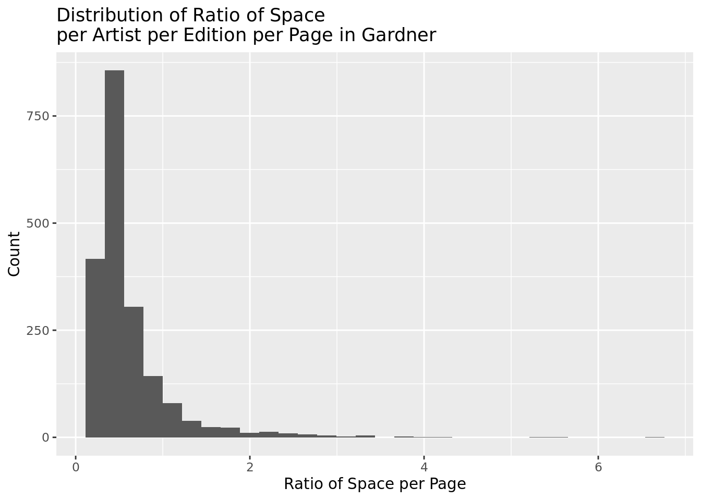
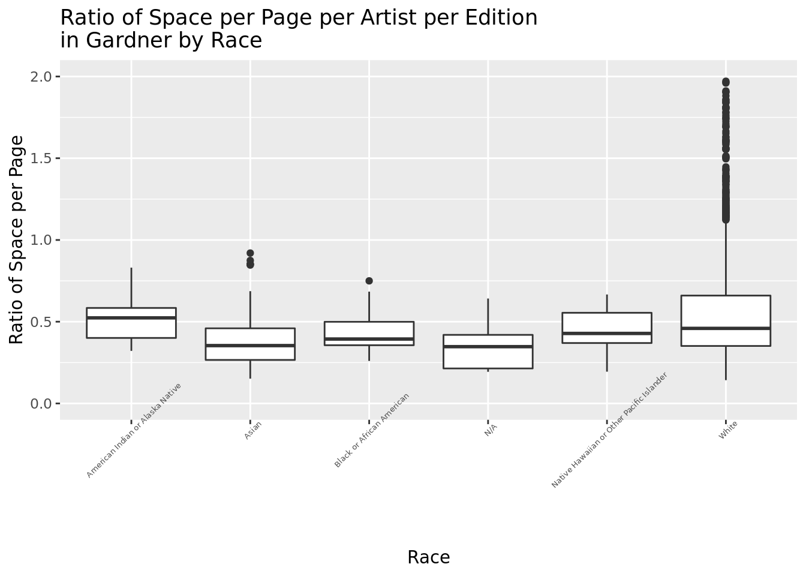
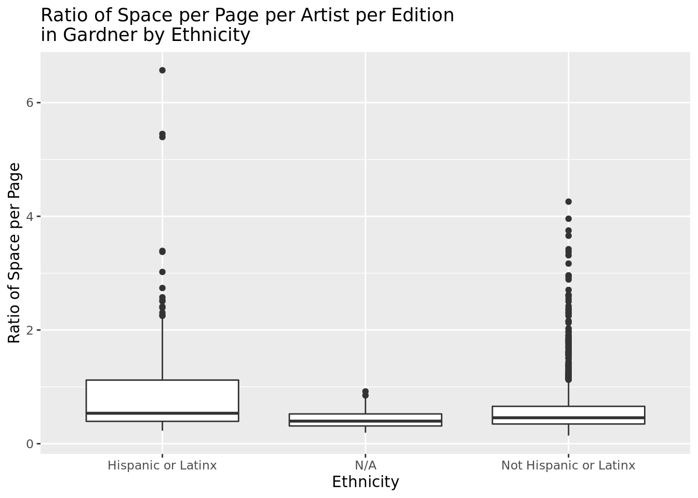
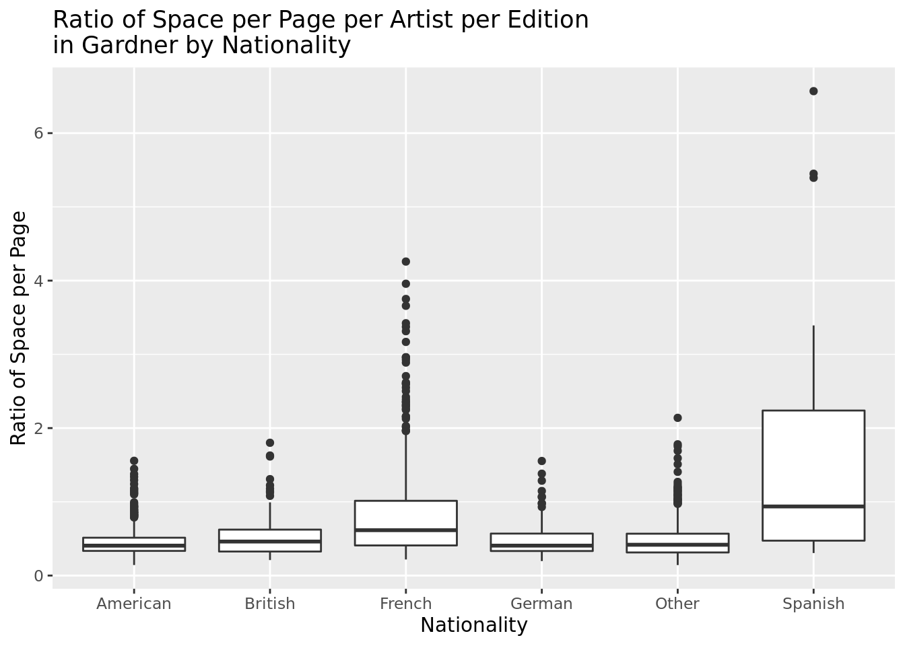
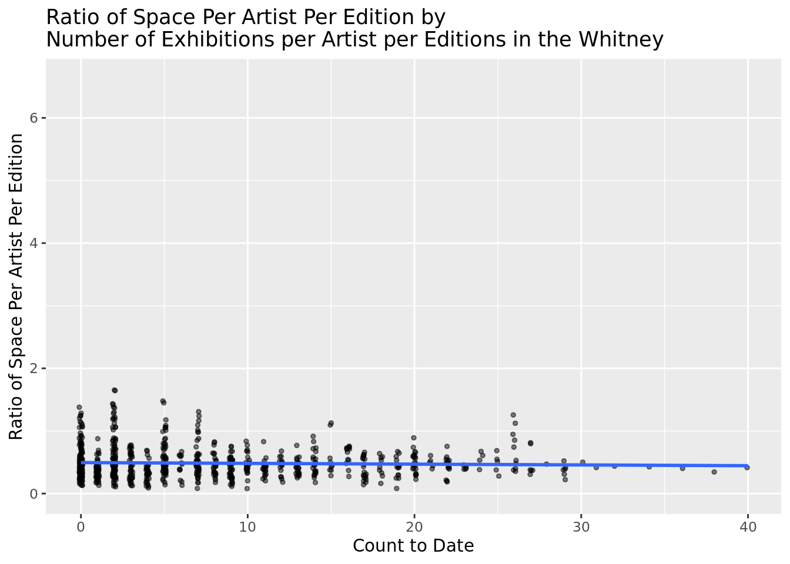
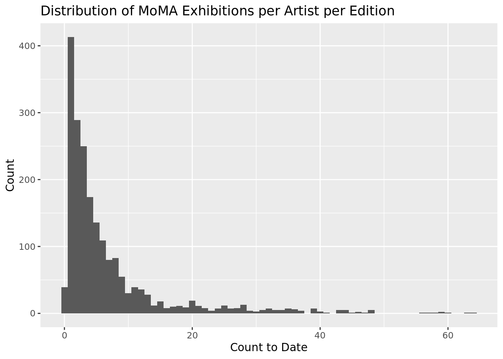

library(tidyverse)
library(tidymodels)
library(knitr)
library(janitor) # for the clean_names functionMuseum Data Join
2022-02-19
Data prep
# load gardner
gardner <- read_csv(here::here("Chapter1", "data/gardner.csv")) %>%
janitor::clean_names()
# load janson
janson <- read_csv(here::here("Chapter1", "data/janson.csv")) %>%
janitor::clean_names()
# load MoMA
moma <- read_csv(here::here("Chapter1", "data/moma.csv")) %>%
janitor::clean_names() %>%
filter(year != "MISSING YEAR") %>%
mutate(year = as.numeric(year))Warning: One or more parsing issues, see `problems()` for details# load CountMoMAExh
#countmoma <- read_csv(here::here("Chapter1", "data/countmoma.csv")) %>%
# janitor::clean_names()
# load Whitney
whitney <- read_csv(here::here("Chapter1", "data/whitney.csv")) %>%
janitor::clean_names()NOTE: Moma data has some (very few) rows where the year is MISSING YEAR, check if those can be filled in.
Join gardner and janson with column = book, janson, gardner
janson <- janson %>%
mutate(
artist_nationality_other =
case_when(
artist_nationality == "French" ~ "French",
artist_nationality == "British" ~ "British",
artist_nationality == "American" ~ "American",
artist_nationality == "Spanish" ~ "Spanish",
artist_nationality == "German" ~ "German",
TRUE ~ "Other"
)
) %>%
select(
"artist_name",
"edition_number",
"year",
"artist_unique_id",
"artist_nationality",
"artist_nationality_other",
"artist_gender",
"artist_race",
"artist_ethnicity",
"book",
"space_ratio_per_page"
)gardner <- gardner %>%
mutate(
artist_nationality_other =
case_when(
artist_nationality == "French" ~ "French",
artist_nationality == "British" ~ "British",
artist_nationality == "American" ~ "American",
artist_nationality == "Spanish" ~ "Spanish",
artist_nationality == "German" ~ "German",
TRUE ~ "Other"
)
) %>%
select(
"artist_name",
"edition_number",
"year",
"artist_unique_id",
"artist_nationality",
"artist_nationality_other",
"artist_gender",
"artist_race",
"artist_ethnicity",
"book",
"space_ratio_per_page"
)NOTE: I don’t think we want these joined, we want them to be binded to each other. So I changed that.
gardnerjanson <- gardner %>%
bind_rows(janson)NOTE: I don’t think we need these anymore if the cleaning of artist names is already done?
countmomacleanNA - maybe we don’t need this??
#countmoma <- countmoma %>%
# filter(`TotalAreaText(cm^2)`!= "NA")join gardnerjanson with MoMA through antijoin - showing gardnerjanson that is NOT in MoMA - compare directly with moma?
#antimomagardnerjanson <- gardnerjanson %>%
# anti_join(moma)clean artist name manually using gardnerjanson name
#antiwhitneygardnerjanson <- gardnerjanson %>%
# anti_join(whitney)Create moma with complete years
moma_complete_years <- moma %>%
mutate(count = 1)%>%
arrange(artist_name, year)%>%
group_by(artist_name)%>%
complete(artist_name, year = c(min(year):max(year))) %>%
mutate(
moma_count = if_else(is.na(count), 0, count),
moma_count_to_date = cumsum(count)
) %>%
select(artist_name, year, moma_count, moma_count_to_date)Create whitney with complete years
whitney_complete_years <- whitney %>%
mutate(count = 1)%>%
arrange(artist_name, year)%>%
group_by(artist_name)%>%
complete(artist_name, year = c(min(year):max(year))) %>%
mutate(
whitney_count = if_else(is.na(count), 0, count),
whitney_count_to_date = cumsum(count)
) %>%
select(artist_name, year, whitney_count, whitney_count_to_date)Join moma and whitney info to gardnerjanson
NOTE: I would expect gardnerjanson_museums to have the same number of rows as gardnerjanson, we should look into why that’s not happening.
gardnerjanson_museums <- gardnerjanson %>%
left_join(moma_complete_years, by = c("artist_name", "year")) %>%
left_join(whitney_complete_years, by = c("artist_name", "year"))Exploratory data analysis
Bivariate Plots and MLR with space ratio
Janson:
ggplot(gardnerjanson %>% filter(book == "janson"),
aes(x = space_ratio_per_page, fill = edition_number)) +
geom_histogram() +
labs(
title = "Distribution of Ratio of Space\nper Artist per Edition per Page in Janson",
x = "Ratio of Space per Page",
y = "Count"
)`stat_bin()` using `bins = 30`. Pick better value with `binwidth`.
summary(janson$space_ratio_per_page) Min. 1st Qu. Median Mean 3rd Qu. Max.
0.0946 0.2531 0.3387 0.3967 0.4855 1.2785 median <- median(janson$space_ratio_per_page)The visualization above is right skewed, unimodal and assymetrical. Therefore, we would want to look at the median and IQR. The median of space_ratio_per_page in Janson is 0.3387305.
space_ratio_per_page with Gender
ggplot(gardnerjanson %>% filter(book == "janson"),
aes(x = artist_gender, y = space_ratio_per_page)) +
geom_boxplot() +
labs(
title = "Ratio of Space per Page per Artist per Edition\nin Janson by Gender",
x = "Gender",
y = "Ratio of Space per Page"
)
space_ratio_per_page with Race
ggplot(gardnerjanson %>% filter(book == "janson"),
aes(x = artist_race, y = space_ratio_per_page)) +
geom_boxplot() +
labs(
title = "Ratio of Space per Page per Artist per Edition\nin Janson by Race",
x = "Race",
y = "Ratio of Space per Page"
)
space_ratio_per_page with Ethnicity
ggplot(gardnerjanson %>% filter(book == "janson"),
aes(x = artist_ethnicity, y = space_ratio_per_page)) +
geom_boxplot() +
labs(
title = "Ratio of Space per Page per Artist per Edition\nin Janson by Ethnicity",
x = "Ethnicity",
y = "Ratio of Space per Page"
)
space_ratio_per_page with Nationality
ggplot(gardnerjanson %>% filter(book == "janson"),
aes(x = artist_nationality_other, y = space_ratio_per_page)) +
geom_boxplot() +
labs(
title = "Ratio of Space per Page per Artist per Edition\nin Janson by Nationality",
x = "Nationality",
y = "Ratio of Space per Page"
)
MLR of Janson with Gender +Race + Nationality + Ethnicity ~ space_ratio_per_page
jansonMLR <- lm(space_ratio_per_page ~ artist_race +
artist_ethnicity +
artist_gender +
artist_nationality_other,
data = gardnerjanson %>% filter(book == "janson")
)
summary(jansonMLR)
Call:
lm(formula = space_ratio_per_page ~ artist_race + artist_ethnicity +
artist_gender + artist_nationality_other, data = gardnerjanson %>%
filter(book == "janson"))
Residuals:
Min 1Q Median 3Q Max
-0.31271 -0.13922 -0.05374 0.09048 0.92620
Coefficients:
Estimate Std. Error t value Pr(>|t|)
(Intercept) 0.374224 0.150961 2.479 0.01328 *
artist_raceAsian -0.117036 0.201165 -0.582 0.56079
artist_raceBlack or African American -0.071217 0.147590 -0.483 0.62949
artist_raceWhite -0.039936 0.142574 -0.280 0.77943
artist_ethnicityNot Hispanic or Latinx 0.016095 0.053113 0.303 0.76191
artist_genderMale 0.034123 0.019702 1.732 0.08347 .
artist_nationality_otherBritish 0.009622 0.019843 0.485 0.62781
artist_nationality_otherFrench 0.037112 0.014081 2.636 0.00848 **
artist_nationality_otherGerman -0.032213 0.020465 -1.574 0.11567
artist_nationality_otherOther 0.009929 0.016216 0.612 0.54042
artist_nationality_otherSpanish 0.055779 0.057727 0.966 0.33406
---
Signif. codes: 0 '***' 0.001 '**' 0.01 '*' 0.05 '.' 0.1 ' ' 1
Residual standard error: 0.1998 on 1623 degrees of freedom
Multiple R-squared: 0.01582, Adjusted R-squared: 0.009756
F-statistic: 2.609 on 10 and 1623 DF, p-value: 0.003815glance(jansonMLR)$r.squared[1] 0.01582008Gardner:
ggplot(
gardnerjanson %>% filter(book == "gardner"),
aes(x = space_ratio_per_page)
) +
geom_histogram() +
labs(
title = "Distribution of Ratio of Space\nper Artist per Edition per Page in Gardner",
x = "Ratio of Space per Page",
y = "Count"
)`stat_bin()` using `bins = 30`. Pick better value with `binwidth`.
gardnerjanson %>%
filter(book == "gardner") %>%
summarize(
min = min(space_ratio_per_page),
q1 = quantile(space_ratio_per_page, 0.25),
median = median(space_ratio_per_page),
mean = mean(space_ratio_per_page),
q3 = quantile(space_ratio_per_page, 0.75),
max = max(space_ratio_per_page)
)# A tibble: 1 × 6
min q1 median mean q3 max
<dbl> <dbl> <dbl> <dbl> <dbl> <dbl>
1 0.142 0.330 0.404 0.442 0.520 1.59space_ratio_per_page vs Gender
ggplot(gardnerjanson %>% filter(book == "gardner"),
aes(x = artist_gender, y = space_ratio_per_page)
) +
geom_boxplot() +
labs(
title = "Ratio of Space per Page per Artist per Edition\nin Gardner by Gender",
x = "Gender",
y = "Ratio of Space per Page"
)
space_ratio_per_page vs Race
ggplot(
gardnerjanson %>% filter(book == "gardner"),
aes(x = artist_race, y = space_ratio_per_page)
) +
geom_boxplot() +
labs(
title = "Ratio of Space per Page per Artist per Edition\nin Gardner by Race",
x = "Race",
y = "Ratio of Space per Page"
) +
theme(axis.text.x = element_text(angle = 45, size = 5)) +
ylim(0, 2.0)
space_ratio_per_page vs Ethnicity
ggplot(
gardnerjanson %>% filter(book == "gardner"),
aes(x = artist_ethnicity, y = space_ratio_per_page)
) +
geom_boxplot() +
labs(
title = "Ratio of Space per Page per Artist per Edition\nin Gardner by Ethnicity",
x = "Ethnicity",
y = "Ratio of Space per Page"
)
space_ratio_per_page vs Nationality
ggplot(
gardnerjanson %>% filter(book == "gardner"),
aes(x = artist_nationality_other, y = space_ratio_per_page)
) +
geom_boxplot() +
labs(
title = "Ratio of Space per Page per Artist per Edition\nin Gardner by Nationality",
x = "Nationality",
y = "Ratio of Space per Page"
)
GardnerMLR Demographic
gardnerMLR <- lm(space_ratio_per_page ~ artist_race +
artist_ethnicity +
artist_gender +
artist_nationality_other,
data = gardnerjanson %>% filter(book == "gardner")
)
summary(gardnerMLR)
Call:
lm(formula = space_ratio_per_page ~ artist_race + artist_ethnicity +
artist_gender + artist_nationality_other, data = gardnerjanson %>%
filter(book == "gardner"))
Residuals:
Min 1Q Median 3Q Max
-0.29765 -0.11680 -0.02954 0.07961 1.13259
Coefficients:
Estimate Std. Error
(Intercept) 0.4052889 0.0635824
artist_raceAsian -0.0850500 0.0596650
artist_raceBlack or African American -0.0285437 0.0623665
artist_raceN/A -0.1877470 0.0600065
artist_raceNative Hawaiian or Other Pacific Islander -0.0911149 0.0649755
artist_raceWhite -0.0421782 0.0588062
artist_ethnicityN/A -0.1053802 0.0816728
artist_ethnicityNot Hispanic or Latinx 0.0034035 0.0240869
artist_genderMale 0.0452433 0.0119680
artist_genderN/A 0.2226094 0.0807536
artist_nationality_otherBritish 0.0371965 0.0136929
artist_nationality_otherFrench 0.0749931 0.0092972
artist_nationality_otherGerman 0.0008291 0.0150234
artist_nationality_otherOther 0.0205087 0.0114445
artist_nationality_otherSpanish 0.0476471 0.0285897
t value Pr(>|t|)
(Intercept) 6.374 2.21e-10 ***
artist_raceAsian -1.425 0.154160
artist_raceBlack or African American -0.458 0.647227
artist_raceN/A -3.129 0.001777 **
artist_raceNative Hawaiian or Other Pacific Islander -1.402 0.160961
artist_raceWhite -0.717 0.473298
artist_ethnicityN/A -1.290 0.197085
artist_ethnicityNot Hispanic or Latinx 0.141 0.887644
artist_genderMale 3.780 0.000161 ***
artist_genderN/A 2.757 0.005886 **
artist_nationality_otherBritish 2.716 0.006647 **
artist_nationality_otherFrench 8.066 1.15e-15 ***
artist_nationality_otherGerman 0.055 0.955992
artist_nationality_otherOther 1.792 0.073262 .
artist_nationality_otherSpanish 1.667 0.095733 .
---
Signif. codes: 0 '***' 0.001 '**' 0.01 '*' 0.05 '.' 0.1 ' ' 1
Residual standard error: 0.1615 on 2310 degrees of freedom
Multiple R-squared: 0.05735, Adjusted R-squared: 0.05164
F-statistic: 10.04 on 14 and 2310 DF, p-value: < 2.2e-16glance(gardnerMLR)$r.squared[1] 0.0573532MLR demograpic with jansongardner
gardnerjansonMLR <- lm(space_ratio_per_page ~ artist_race +
artist_ethnicity +
artist_gender +
artist_nationality_other,
data = gardnerjanson
)
summary(gardnerjansonMLR)
Call:
lm(formula = space_ratio_per_page ~ artist_race + artist_ethnicity +
artist_gender + artist_nationality_other, data = gardnerjanson)
Residuals:
Min 1Q Median 3Q Max
-0.34757 -0.12655 -0.03736 0.08778 1.14634
Coefficients:
Estimate Std. Error
(Intercept) 0.411402 0.062460
artist_raceAsian -0.074824 0.059628
artist_raceBlack or African American -0.045433 0.061200
artist_raceN/A -0.180696 0.062626
artist_raceNative Hawaiian or Other Pacific Islander -0.083410 0.068039
artist_raceWhite -0.046890 0.058202
artist_ethnicityN/A -0.111697 0.089679
artist_ethnicityNot Hispanic or Latinx -0.002671 0.023107
artist_genderMale 0.037679 0.010603
artist_genderN/A 0.220838 0.089384
artist_nationality_otherBritish 0.025254 0.011565
artist_nationality_otherFrench 0.060289 0.008001
artist_nationality_otherGerman -0.015781 0.012343
artist_nationality_otherOther 0.014537 0.009553
artist_nationality_otherSpanish 0.040057 0.026567
t value Pr(>|t|)
(Intercept) 6.587 5.09e-11 ***
artist_raceAsian -1.255 0.209606
artist_raceBlack or African American -0.742 0.457903
artist_raceN/A -2.885 0.003931 **
artist_raceNative Hawaiian or Other Pacific Islander -1.226 0.220299
artist_raceWhite -0.806 0.420495
artist_ethnicityN/A -1.246 0.213014
artist_ethnicityNot Hispanic or Latinx -0.116 0.907975
artist_genderMale 3.554 0.000384 ***
artist_genderN/A 2.471 0.013528 *
artist_nationality_otherBritish 2.184 0.029039 *
artist_nationality_otherFrench 7.535 6.01e-14 ***
artist_nationality_otherGerman -1.279 0.201133
artist_nationality_otherOther 1.522 0.128168
artist_nationality_otherSpanish 1.508 0.131689
---
Signif. codes: 0 '***' 0.001 '**' 0.01 '*' 0.05 '.' 0.1 ' ' 1
Residual standard error: 0.1798 on 3944 degrees of freedom
Multiple R-squared: 0.03264, Adjusted R-squared: 0.02921
F-statistic: 9.507 on 14 and 3944 DF, p-value: < 2.2e-16glance(gardnerjansonMLR)$r.squared[1] 0.03264395Museums
whitney eda
ggplot(gardnerjanson_museums, aes(x = whitney_count_to_date)) +
geom_histogram() +
labs(
title = "Distribution of Whitney Exhibitions per Artist per Edition",
x = "Count to Date",
y = "Count"
)`stat_bin()` using `bins = 30`. Pick better value with `binwidth`.Warning: Removed 4026 rows containing non-finite values (stat_bin).
ggplot(gardnerjanson_museums, aes(x = whitney_count_to_date, y = space_ratio_per_page)) +
geom_point() +
labs(
title = "Ratio of Space Per Artist Per Edition by\nNumber of Exhibitions per Artist per Editions in the Whitney",
x = "Count to Date",
y = "Ratio of Space Per Artist Per Edition"
)Warning: Removed 4026 rows containing missing values (geom_point).
moma eda
ggplot(gardnerjanson_museums, aes(x = moma_count_to_date)) +
geom_histogram() +
labs(
title = "Distribution of MoMA Exhibitions per Artist per Edition",
x = "Count to Date",
y = "Count"
)`stat_bin()` using `bins = 30`. Pick better value with `binwidth`.Warning: Removed 4034 rows containing non-finite values (stat_bin).
ggplot(gardnerjanson_museums, aes(x = moma_count_to_date, y = space_ratio_per_page)) +
geom_point() +
labs(
title = "Ratio of Space Per Artist Per Edition by\nNumber of Exhibitions per Artist per Editions in the MoMA",
x = "Count to Date",
y = "Ratio of Space Per Artist Per Edition"
)Warning: Removed 4034 rows containing missing values (geom_point).